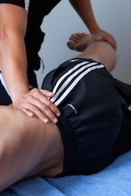
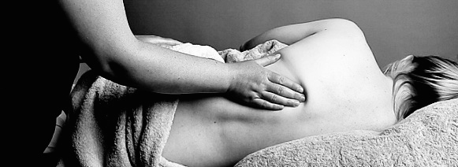

The origins of Thai massage date back about 2,500 years. Thai massage improves health and vitality by using energy lines, pressure points,
and assisted stretching, helping the body to heal itself.
Island Massage / Ashiatsu
The client lies face-down.
Coconut oil or lotion is generously applied to the client's back.
The therapist uses foot pressure, mostly focusing on the back and hand pressure where needed. Island Style massage achieves many of the benefits of deep tissue massage while retaining the relaxing effect of a Swedish massage.
Island Massage / Ashiatsu
Jop Sen
Performed with the client in loose-fitting clothes, Jop Sen massage uses deep pressure along sibsen,
or “ten energy lines”, along muscle and tendon,
releasing myofascial tension which in turn helps the body to heal itself (see also: Thai meridians : Sensip).
Thai Yoga Massage
The clothed recipient is placed into positions that stretch the body. Elements of Thai
Yoga Massage and Jop Sen are often used together in Thai Massage, depending on client needs
(see also: Thai Massage — Wikipedia).
Thai Herbal Massage
Begins using Jop Sen, then precedes to a soothing oil massage to
create deeper relaxation, then concludes with deep pressure on specific
points, and depending on client needs, focus on specific areas.
Thai Herbal
Swedish Massage
This is the perfect massage
if you're looking to unwind or relax.
Often the signature in spas, this is a classic massage that involves a generous amount of oil,
long effleurage strokes of light to medium in pressure. Swedish massage has been shown to reduce blood pressure, lower stress markers
such as cortisol and inflammatory interleukins,
mitigate effects of osteoarthritis and reduce anxiety and increase sense of
confidence and well-being
(PMID 16494570,
PMID 20809811,
PMID: 16290894,
PMID 17159021,
PMID 19341988,
PMID 23251939).
Deep Tissue Massage
Deep tissue massage uses strong pressure on deep muscles and connective tissue
in specific areas. Although deep tissue is not a full body massage,
this technique can be incorporated into a full body massage, such as Swedish or Thai.
Sports Massage

Sports Massage
Deep pressure is applied using hands and feet.
Stretches and movements from Thai massage can be used to focus on sports-related problems, to increase resting muscle length, increase blood flow, attenuate muscular imbalance, and even to increase bone mineral density
(PMID 20649054).
Myofascial Release
Myofascial release is soft tissue therapy intended to eliminate pain, increase range of
motion, increase circulation, and improve posture by working with the fascia. Fascia is
the connective tissue that connects and covers all muscles, organs, and skeletal structures
of the body. Direct myofascial release is sometimes known as deep tissue work.
Pregnancy Massage

Pregnancy Massage
Relieve the aches and pains that go along with pregnancy. Long gentle strokes, for back,
hips, legs, and shoulders, ending with a relaxing scalp massage.
Pregnancy massage can help reduce swelling, especially in the legs, as well as improve general sense
of well-being.
Trigger Point Therapy
Trigger points are small knots in the muscle fibers that often cause a lot of tension.
During a session, focused pressure is applied to these areas of tension, until they are
released. ​
Orthopedic
Orthopedic massage is rehabilitative sports massage for painful conditions that affect
the soft tissues and joints in the body. Orthopedic massage can increase range of motion,
lubricate joints, and encourage structural balance.